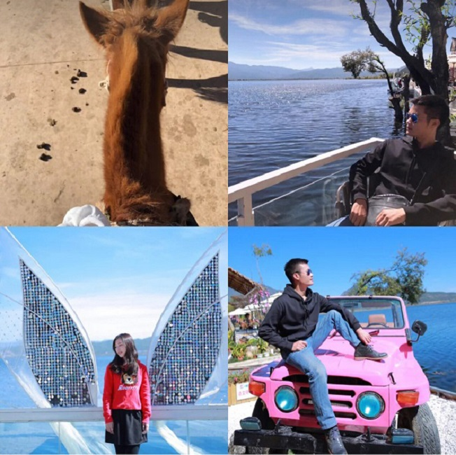
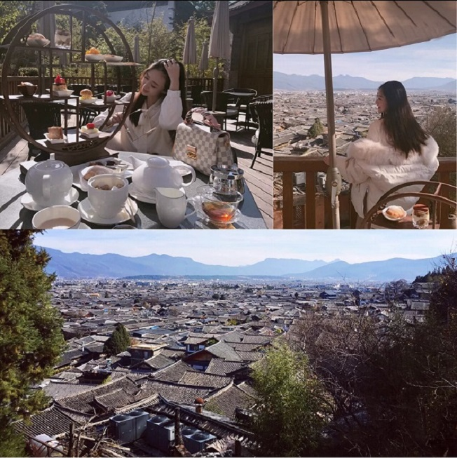

VIP1
上次难得有次年假，在大司马管家阿灿那里定了六天的行程，省了不少钱，选择了大理、丽江、玉龙雪山六天纯玩这条网红套餐。我对云南的热爱源于她的名字--“彩云之南”是每个人对她的亲密称呼。当我第一次踏足这片土地时，我感到了天地造化无处不在的奇迹，无论是孩子般变化的天气，还是千姿百态的动植物，少数名族的风情万种、数不胜数的美丽风景……这里所有的一切，都让我对云南产生了深厚的感情。
说是计划，其实也没怎么做过攻略，算是一次说走就走的旅行吧，我不喜欢把一次旅行提前多少多少天就做好计划，那样我觉得会失去很多乐趣，最终把时间交给了阿灿（网红品牌，吐血推荐~）废话不多说了，彩云之南了解一下~


2016-5-31 6 4
20小时前 回复
江南风格
美景、美茶、美人呀~ 只想一路向西去大理
20小时前 回复
答主是联系的大司马的阿灿的吗，我有7天假期，不知道够不够云南全部玩到？
20小时前 回复
南方GV
同问，我是5天的时间，阿灿可以帮我设计线路吗？
20小时前 回复
设计线路是免费的哈~阿灿的手机18687998995放在这里给大家，人非常好，吐血推荐。


 QQ
QQ